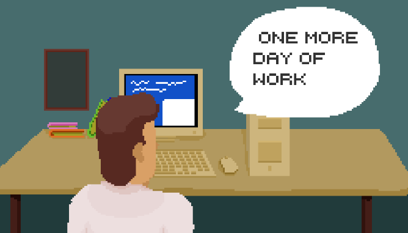

Projeto James Weeb
Motivação
Este jogo foi feito motivado pelo Nasa Space Apps 2022 no desafio "Learning Through the Looking Glass", este desafio compunha a ideia de ensinar como o satelite James Webb funciona, trabalhei no time "Albini Lovers" como programador do jogo.
Historia
A historia do jogo e que você como estagiario da Nasa, estaria trabalhando tirando fotos com o satelite ate que num momento de apagão todas suas fotos tiradas são perdidas, fazendo você ter que tirar fotos destes astros o mais rapido possivel
Ambiente
O jogo se passa com o jogador sentado numa cadeira de escritorio da Nasa, com seu computador e seu retrato ao lado, no computador temos a visão do satelite James, podendo ver o espaço em volta dele
Gameplay
No seu computador você pode escrever codigos que são enviados ao satelite estes codigos vão deste mexer o lugar que esta olhando ate tirar foto do que ele esta vendo, estes codigos em questão são:
- Right + Angulo(0º-360º)
- Left + Angulo(0º-360º)
- Up + Angulo(0º-360º)
- Down + Angulo(0º-360º)